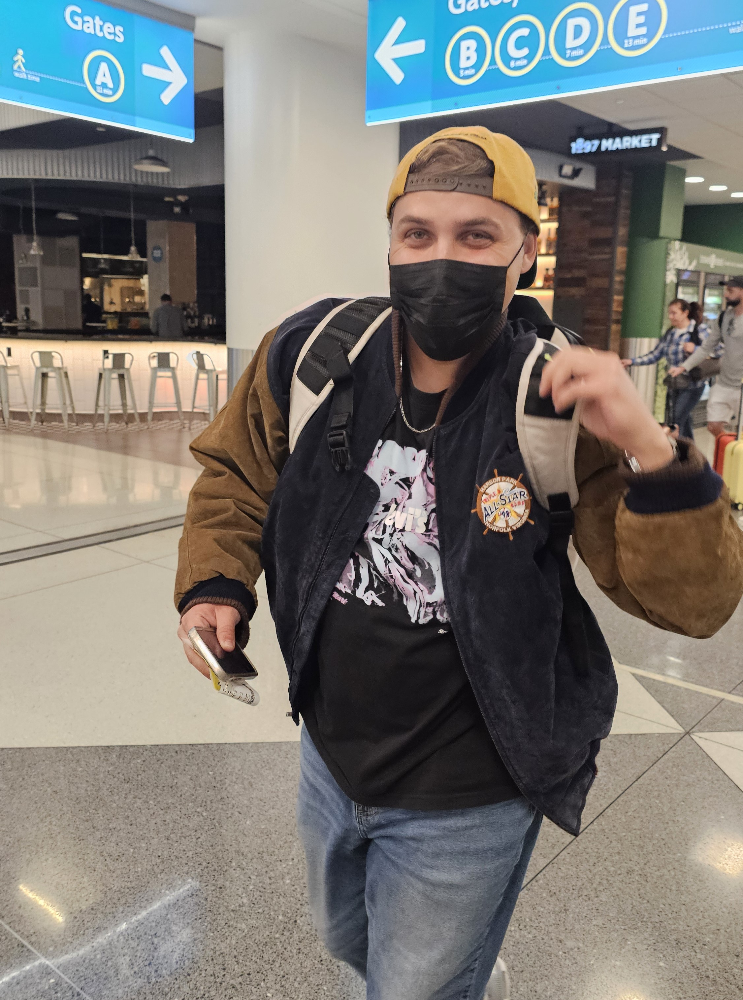
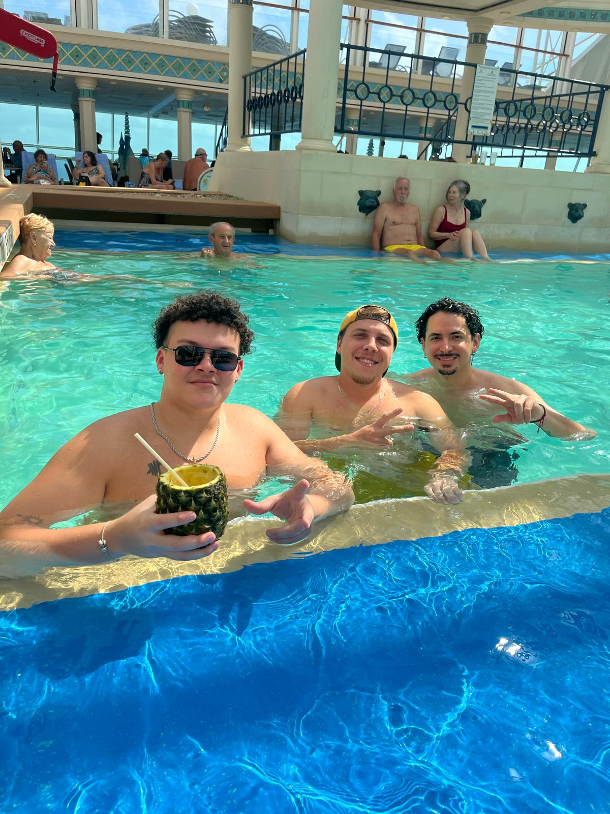
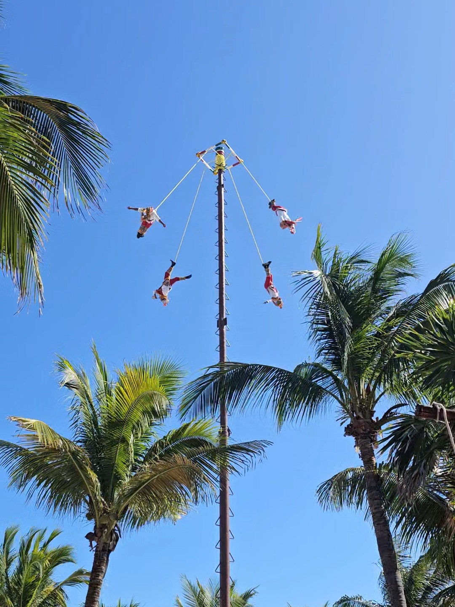
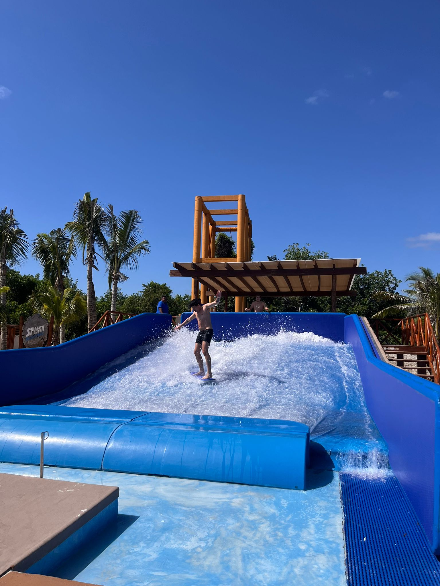
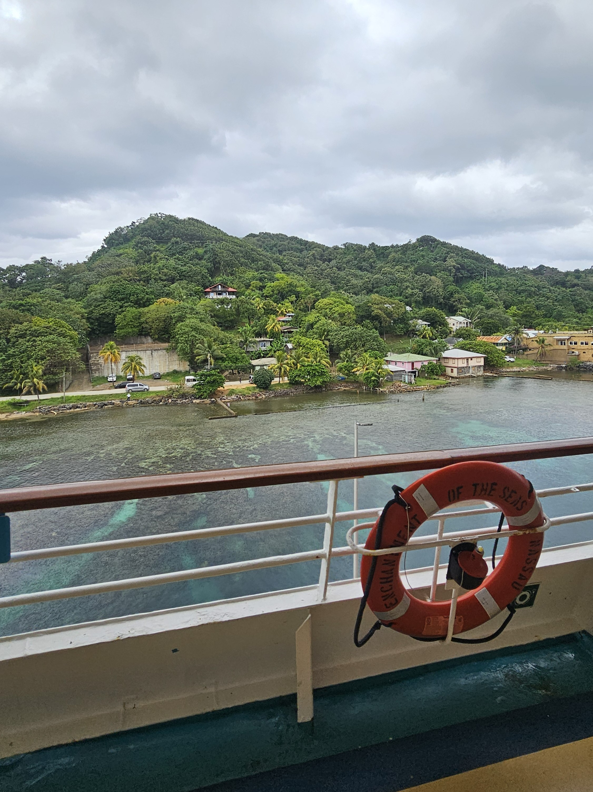
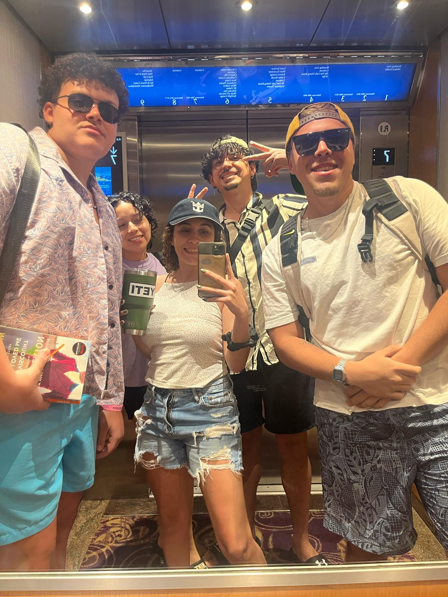
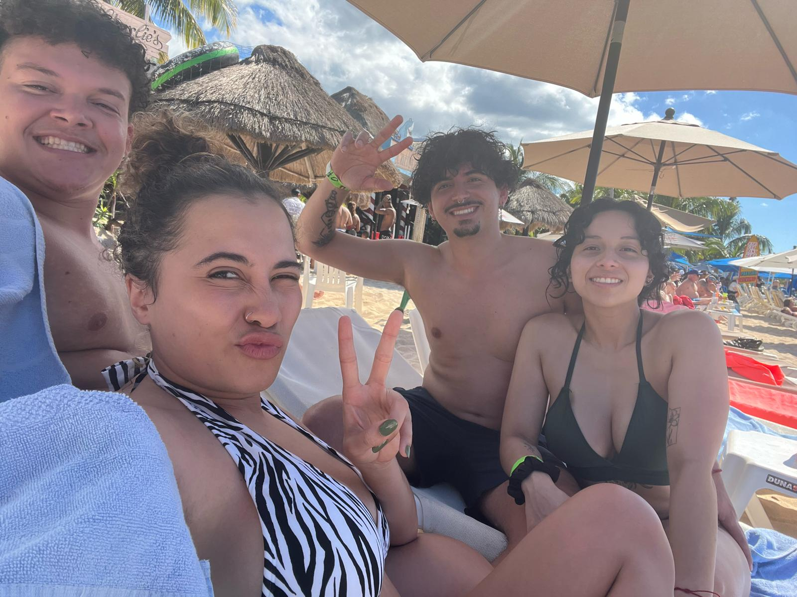
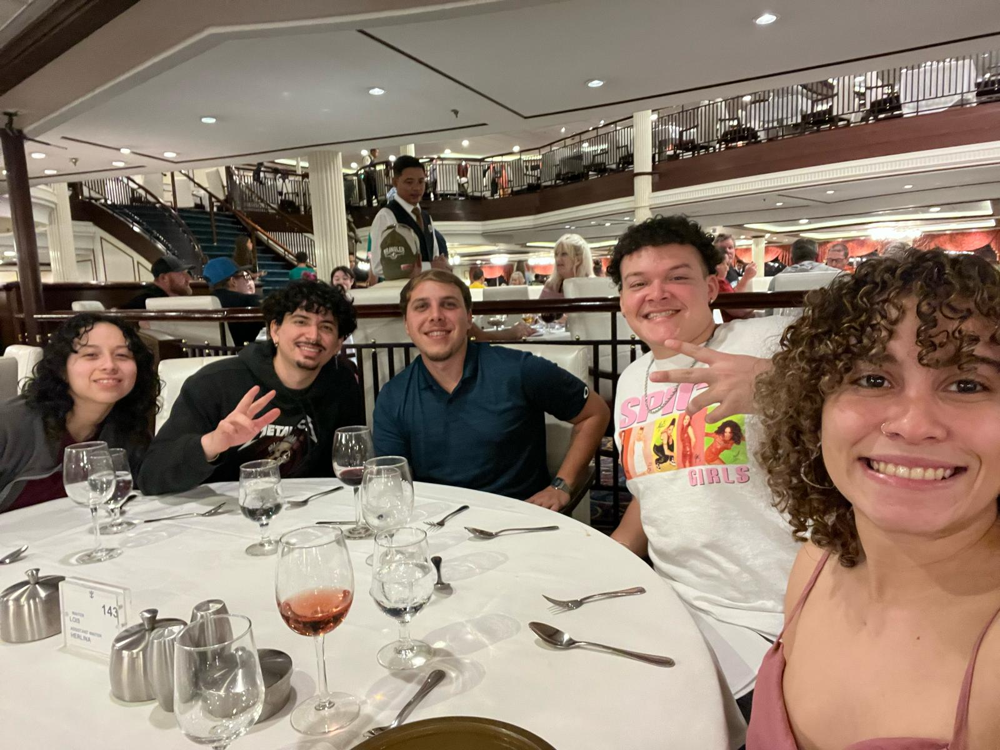
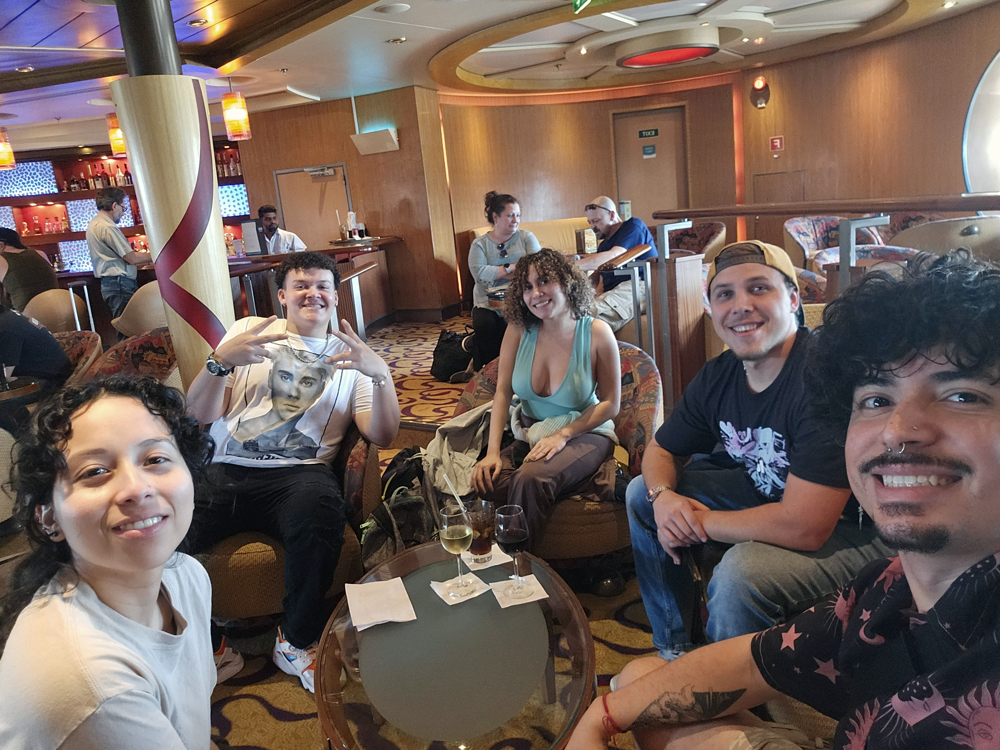

Our day began early, around 4am. My partner, Christine, and I got ready as quickly as we could. I was a bit restless, since we stayed up late the night before to make sure we had everything packed. Once we were sure that we had everything, our roommate drove us to the airport to meet with our travel companions for our flight at 8am. After an hour and a half, we made it to Tampa and ordered an  Uber to take us to the port. Once we boarded, we were amazed at the interior and size of the ship. Mind you this is a small ship, so it's not even close to the biggest ship the line offers. Once we attended the mandatory safety drill, we headed off to our rooms. Admittedly the rooms were a bit lackluster, but they served their purposes well enough. After a while, it was time for the ship to set sail to adventure! Later that night, after some light exploration with our friends, we made our way to dinner where we met our waiters for the week: Jesus, and Chen Chen. Both highly enthusiastic and professional, we enjoyed an amazing meal and drinks. After a long day of travel, everyone was exhausted so we said goodnight and went off to our rooms.
Cruise Diary
Day 1: 'Embarkation Day'

Day 2: Day at Sea: 'Let the vacation begin!'

The first part of our adventure began with a day at sea while we made our way to Costa Maya. We woke up around 8am, got dressed, and headed straight for the buffet. There were SO. MANY. OPTIONS. I grabbed a giant plate and started piling everything that caught my eye: bacon, waffles, some of the fluffiest eggs I'd ever seen, etc. It was a challenge to finish it all but boy was it delicious. After breakfast, we changed into our bathing suits and began the search for empty seats by the pool. If you've ever been on a cruise or a resort with a pool, you  know how challenging it is. Finally, we found chairs and dipped into the warm water. A couple of poolside frozen margaritas later, and we we're ready for a little nap (Christine and I are such lightweights). After our nap, we began getting ready for formal night. I'd been looking forward to this for quite a while, since there are not that many occasions for me to wear a suit. Christine bought a beautiful, slender green dress while I wore a navy blue suit. After meeting our group, there was only one conclusion: we were a very handsome group! Dinner was amazing, and after eating, we attended a Broadway-style show featuring popular music from the 80's and 90's. Our friend, Gerardo, was upset that they didn't feature anything from Queen, but it was a great show in my opinion. We had some cocktails at the bar and great conversations before we called it a day.
Day 3: Costa Maya (Mahahual), Mexico: 'Jose is really the best!'
I think this was easily my favorite day of the cruise. We made port at 8am in Costa Maya, but we didn't really get up until around 10am. After eating breakfast and getting ready, we left the ship probably around 11:30am, and we made our way to the port area to check out what there was to do. Turns out there was a lot to do. While we looked around the shops, we spotted a bar that seemed nice, and we each got a yard of frozen Daiquiri (everyone went for the Piña Colada flavor but I opted for the Mango) then we walked around some more. Almost no time later, in the middle of the square, we were able to watch "La Danza de Los Voladores" (The Dance of the Flyers); an ancient ceremony that originated from the Totonac and Nahua cultures in Mexico. It involves 4 men, the 'Voladores', climbing a tall pole around 20-ish meters tall with ropes tied on their waists. I'd never seen this in person but I had come across the tradition online, so I was excited to see it firsthand. Once they got to the top and fastened themselves to the top of the pole, one of them began playing a song with a flute and a drum. As he did so, they all jumped backward and began spinning around the pole! The most impressive part was that the player was still playing his drum and flute as he spun towards the ground! It was an amazing sight.
After seeing this, we met a friendly local named Jose. Jose was a waiter in an area that was a bit like a little private beach. It had a pool instead of the actual ocean but there was a wet bar, which we liked very much! They also had a surf simulator, which I'd always wanted to try. After a couple of failed attempts and a lot of water, I convinced Christine and my friends to try. It was such an amazing experience to share with my friends.
Day 4: Roatan Island, Honduras: 'Why is it so cloudy today?'

This day was a bit of a letdown, to be honest. We had paid for an all-inclusive experience on a private beach with hammocks, all-you-can-eat options, unlimited drinks, you know, the works. Unfortunately, the weather this day was just cold, windy, rainy and gray. The beach was much too cold to get into, which was sad cause I love the ocean. The food was pretty okay, although a bit underseasoned and lukewarm. The highlight of the experience was probably the open bar. We definitely got our money's worth there, maybe a little too much. The experience was still uplifted by having people to share it with and to laugh about in the future. There was also the added bonus that when we left the area of the island, we got to experience one of the most beautiful sunsets ever.
Day 5: Belize City, Belize: 'Eh, we'll stay on the ship... too much tequila.'
The night before Belize, Christine and I went to the 9th deck of the ship for a slice of pizza and we decided that we'd just stay on the ship while we were docked in Belize; part of the reason was because cruise ships don't actually dock on a pier in Belize. Instead, they set anchor a couple of miles from shore and have boats ferrying passengers back and forth. Christine gets seasick very easily (up to this point, she'd been able to handle the ship sway with motion sickness patches), but we were worried the rocking of the ferries might make matters worse. The other reason was frankly; we were very hungover. A nice relaxing day by the pool was in order, so that's what we did. With most of the passengers onshore, we had a pretty empty ship to enjoy. We enjoyed some Harry Potter Trivia, watched our friends get 2nd place at a scavenger hunt, and just relaxed.
Day 6: Cozumel, Mexico!: 'Last Stop, let's go all out!'
This was it. The last stop in another country before we headed back to Tampa. We decided that we were gonna make the most of it, so we headed to the pier to find a local excursion or an activity that we would enjoy. We decided that we had such a good time in Costa Maya that we'd try to find something similar. After wandering around talking to locals about things to do, getting offered countless free samples of tequila, and some very pushy vendors, we found a local taxi driver that recommended a beach resort with full access to water sports like jet skis, kayaks, paddleboards, inflatable courses on water, and a pool table. All of this with unlimited food and drinks included. We couldn't say no to that so he drove us to the spot and it was absolutely amazing!
We made a lot of good memories that day, I'd never done paddleboarding before, but I instantly loved it. To my surprise, I was actually good at it! I had a hand at the obstacle course with my friend, Sam, and we had a blast. Sidenote: floating obstacle courses are hard, especially when you've had a few. After a while, we just spent the rest of the day relaxing on comfortable chairs enjoying the sun, the food, and the company. At the end of the day, we made a lot of fun memories.
Day 7: Day at Sea pt. 2: 'Here's to many more!'

Here it was. Last day on the ship. It's funny how when you're waiting for a vacation to come around, time goes abnormally slow; but when you're actually on vacation, time has a tendency to fly by. While we were saddened our little get-away was coming to an end, we took comfort in the fact that we still had a full day on board to enjoy and the crew did not disappoint. After another amazing breakfast, we made our way to the pool where a belly-flop competition was happening. It was by far some of the most amazing bellyflopping I'd ever seen, and the guy that won the thing was an absolute legend. Afterwards, Sam and I went to the back of the ship to try our hand at a rock climbing wall; something we wanted to do since day 1 but we just hadn't gotten around to doing it. It was also my first time trying rock climbing and, much like paddleboarding, I enjoyed it immensely and was rather good at it. At night, we watched another show, this time featuring an Elton John impersonator that was rather good! At dinner, we made a toast for many more adventures to come and we headed off to our rooms to begin finding and packing all of our stuff.
Day 8: Home Sweet Home
 We arrived at Tampa at 8am and began the disembarking process around 10am, which gave us time to have some breakfast in the buffet and wait for our group to be called. When it was our turn, we made our way to the gangway and said goodbye to the Enchantment of the Seas. From the port, we called an Uber to take us to the airport. It was at this point that we realized just how long six hours are. You see, when we got our tickets, we were trying to save money, so the cheapest option was to take a 6pm flight back home. Not a bad decision for the most part as it would ensure that if anything came up we'd have plenty of time to make it to the airport. Unfortunately, that cushion of time proved to be very, very, very unnecessary. We spent a little over 5 hours in the airport, which felt like ages. I found time to catch up on my homework, learn to play Blackjack, and make a couple of playlists. After an eternity, we eventually made it back to the city, where we said goodbye to our friends. Our roommate picked us up and took us home. The best part was getting to see my cat, who I had missed immensely, and my bed, which was just as warm and comfortable as I remembered. This trip was definitely one of the best trips I have ever been on and I will cherish these memories forever. In fact, we loved it so much that, not a month later, we decided to book another one for the same year, and we can hardly wait.